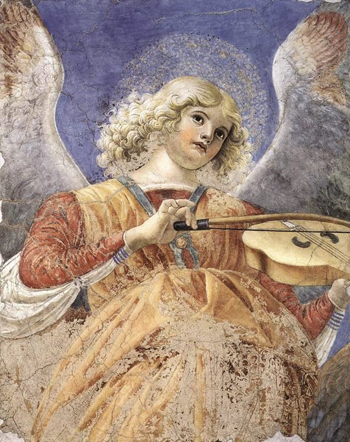

Malarskie krajobrazy Rilkego
Melozzo da Forlì
Podczas pobytu w Duino Rilke upodobał sobie nieduży buduar o bezpretensjonalnym wystroju, tchnący niezwykłym nastrojem intymności. Ściany pokryte były pięknymi, starymi materiami genueńskimi, które niemal niknęły pod obfitością sztychów, akwarel i pastelów. Wisiały na nich również fotografie wszelkiego formatu, zapełniając bez reszty niewielką przestrzeń pomiędzy malowidłami.
Jakże rozkoszne przeżywałam wieczory w moim niezwykłym pokoiku z chybotliwym fotelem, otoczona aniołami Melozza da Forlì, Primaverą i Pensieroso, Centaurem i Nimfą o wielkich oczach, przed obliczem łagodnej Madonny na złotym tle, w towarzystwie Kassnera, Horatio Browna i naszego Serafico.
— Marie von Thurn und Taxis w swym Wspomnieniu o Rainerze Marii Rilkem
Jeden z muzykujących aniołów, fresk Melozza da Forlì z apsydy Basilica dei Santi Apostoli, obecnie w zbiorach Pinakoteki Watykańskiej